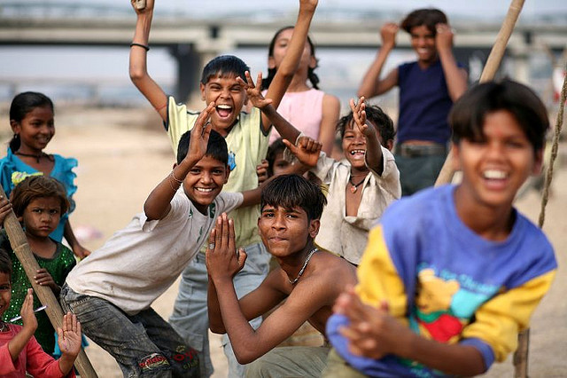
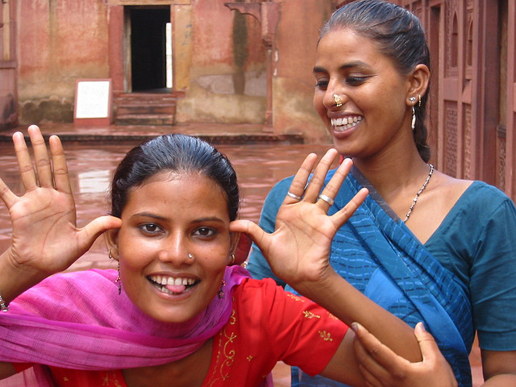
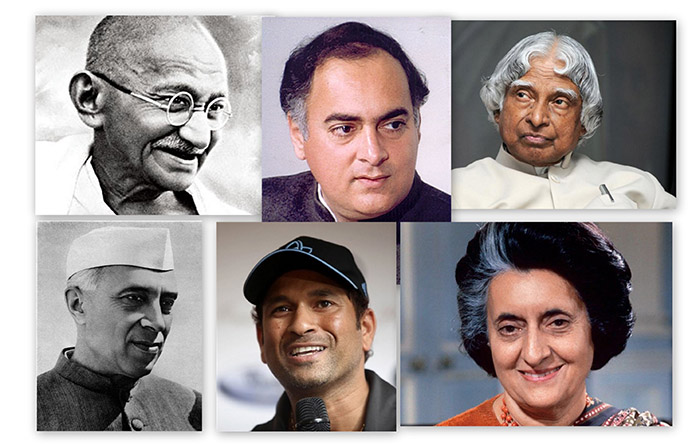

|  |
Scheduled Casts and Scheduled Tribes
Indian Population is a culmination of various races, tribes. It is said to be derived from 6 ethnic groups. 8.2% of the Indian population is Scheduled tribes mostly concentrated in the states of Madhya Pradesh, Chattisgarh, Maharashtra, Odisha, Jharkand and Gujrat. While some of the tribal community have adopted main stream way of life, the majority still face problems like
- pre-agriculture level of technology
- declining population
- low literacy
- substance level of economy

As per census 2011 Scheduled Cast are 16.6% of the population, hence Scheduled Cast and Scheduled Tribe constitute a quarter of population. Of the total population only 39.8% have the work participation, means 60% of the population does not participate in any economic activity. This figure may be exaggerated as students and homemakers come in the 'non-worker' category along with dependents, pensioners and beggars.
The Minorities
There are five religious minorities viz Muslims, Christians, Sikhs, Buddhists and Zoroastrians in India. The term minority is described as "..a group comprising less than half of the population and differing from others, especially the predominant section in race, religion, traditions and culture, language etc..." [Article 30 Indian Constitution]
Over 80% population of the country is Hindu religion. Muslims are the largest minority. Other minorities are Christians(2.34%) and Sikhs(1.9%)
- Total population in India is 1.23 billion
- Hindus 80.44%
- Muslims 13.42%
- Christians 2.34%
- Sikhs 1.9%
- Buddhists 0.68%
- Jains 0.38%
- Others 0.65%
The National Commission for minorities and State Commission of minorities have been constituted to help the minority to preserve their ethnic, religious and linguistic traditions or characteristics markedly different from those of the rest of the population. However India has been facing major violations and clashes among different tribes and religious communities, among other major problems like
- Women Empowerment
- Gender Discrimination
- Dalits and Challenges of Caste inequality
- The Maoist Insurgency
Below are a few of the important personalities (You might know) who have stood for the empowerment of people of India fighting against the evils above either politically or have made Indians proud in other fields. (only to mention few of them)
